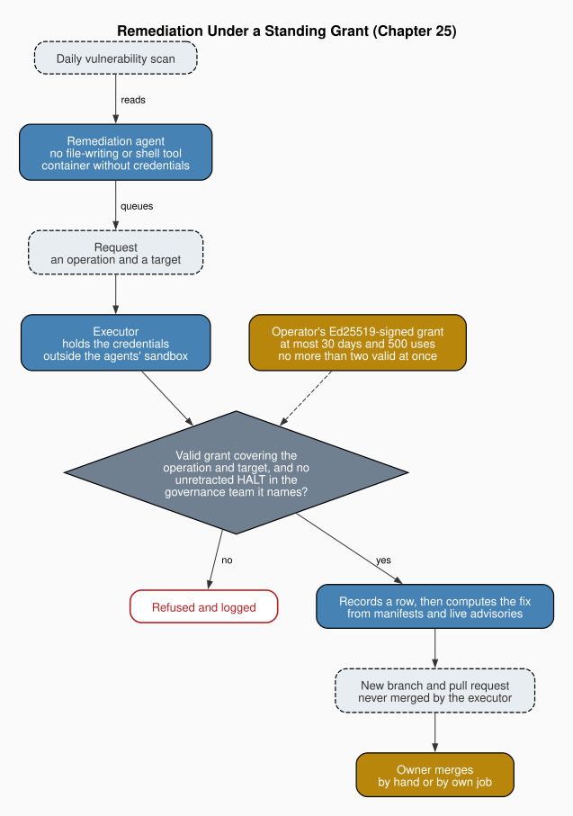

Chapter 25: Remediation Under Grant
Part VI: Hardening and Scale
1. Detection Is Not Repair
Hayek wrote "The Use of Knowledge in Society" against economists who supposed that the data an economy needs could be gathered in one place and acted on from there. His reply was that much of what matters is "the knowledge of the particular circumstances of time and place," held by the man on the spot and never assembled in any single mind Hayek (1945). The essay is usually read as an argument about prices. It is also an argument about who should act, since the person who knows the circumstances is the one best placed to decide what to do about them. The book has read each agent in a team as a man on the spot for its own domain.
Chapter 20 built its remediation cycle on Hayek's reasoning. "I designed the architecture to separate centralized detection from decentralized repair." The investigator has "broad visibility but shallow context," the local orchestrator "narrow visibility but deep context," and the split routes each decision to the agent that knows most about it. The investigator's scope was restricted to "documented assertions about agent behavior," and the repairs it prompted were edits to agent files, run in parallel across repositories with configurable batch sizes. That was sound for its object. A wrong path in a cleanup agent's instructions is cheap to make and cheap to undo, and the orchestrator that knew the fix could safely write it as well.
Code is a different object. When the finding is a vulnerable dependency, the fix is a change to a version pin, a lockfile or a base image, and a wrong fix can break a build, pull in a compromised release or leave the hole it was meant to close. The cost of error rises. Knowing what is wrong and knowing how to make it right were the kinds of knowledge that cycle divided. Code raises a matter of another kind, which is who may hold the means to act, meaning the credentials that push a branch and the standing to decide that a particular change goes ahead.
I argue in this chapter that the split between detection and repair survives the move to code, and that repair then divides a second time along a line Hayek did not draw. The executor that makes each change computes its fix itself, from the repository's manifests and the same public advisory sources the scan reads, so the agent that asks for a fix and the process that makes it work from the same public information. The line between them is one of authority. The agent that knows what to fix and why holds no credentials, and the executor that holds them decides nothing. Authority over the repository, meaning who may change it and on whose warrant, is allocated the way a property right is, and the standing grant the operator signs in advance delegates a bounded decision right from the owner.
Foss and Klein (2012) supply the theory of the firm this reading needs. In their account original judgment rests with the owner of the firm's assets, and the judgment others exercise inside the firm is derived, delegated within bounds the owner sets and can revoke. The operator stands as owner here, and the judgment the agent exercises in choosing what to fix is derived from the operator's, within bounds the operator sets. An operation that loosens one of repair's own bounds, such as a major-version upgrade or a move to a new base image, needs a standing grant that names it. What repair teaches returns to the operator as measured outcomes, refusals and revised rules, and the operator keeps signing and merging, by hand or through a standing job of the operator's own, and starts every change to a server. Hayek's division of knowledge returns where local knowledge re-enters, when a fix goes to the repository's own agents for review and when a person decides whether to merge it. The agent itself holds no tacit knowledge of a market, only the context of one run and the categories of one scan.
2. What the Scanner Knows and What It Cannot See
Butos and McQuade (2005) found the shape of Hayek's sensory order in markets, in science and in other orders that sort incoming events by categories built from past experience. Chapter 20 used their distinction between passive classification, which sorts inputs into fixed categories, and active classification, which revises them, and found the investigator active. A classifier sees only what its categories let it see, and I would add that an honest one has to report where its categories run out, because whoever acts on its output inherits its blind spots along with its findings.
The vulnerability scanner in the framework at the anchor is a classifier of the passive kind. It borrows its categories from others and revises none of them. It finds what published advisories name and nothing else, which places it on the top-down side of the book's distinction between top-down and bottom-up investigation. One daily run scans the operator's repositories, the runtimes on the machine and the operator's servers through a read-only audit, writes a summary that marks what is new, and never commits, pushes or merges. A second pass later the same day re-scans each repository whose default branch moved and audits again any server the executor touched, and it too stages and opens nothing. No vulnerability data is built in, and each run reads live advisory and release sources. An advisory that carries no severity score is counted as high rather than quietly treated as moderate.
The scanner's honesty lies in how it treats what it could not check. A host that cannot be reached or an advisory feed that fails makes the run unscanned, and an unscanned run is never reported as clean. Every workspace the scanner knows of sits in exactly one coverage state, so that nothing is left out silently. A manifest from an ecosystem the scanner does not read is reported as unscannable, and a project holding only such manifests shows up as a coverage gap rather than as clean. The concession runs the other way too. The scanner judges a container's base image and does not scan the image's contents. In the generated security agent's rules, a missing or stale daily run, or one that left part of the estate unscanned, is itself a high finding, and the rule gives its reason plainly, "Silence is not evidence of safety."
The scanner also has to know which version of a repository it is looking at. A checkout left on an old branch would be scanned as it was weeks ago, so an operator may point the scan at a mirror moved to the default branch, which is read only when it was refreshed the same day. Servers' runtimes and operating-system releases are judged against published release data, with unknown kinds reported as unknown. The servers are reached through the server kit, the framework's packaged scripts that audit a host over ssh. The scan prepares fix plans for servers, and a change to a server begins only when the operator starts it (§4).
Who decides what the scanner covers is settled before any agent takes part. A project states its intent in its brief, which may turn scanning off, ask for scanning alone or offer the project for remediation. A brief only narrows what leaves the machine, though, and never what is checked. Enrolment is a command the operator runs, never an agent, and the registry it writes never authorizes a change, a role the framework reserves for signed grants. The framework repository declares scanning, not remediation, in its own brief. Each of these choices keeps coverage with the operator, and none gives an agent a way to widen what it may touch.
3. Agents That Only Ask
Chapter 7 drew a line inside the team between the agent that discovers a problem and the agents that correct it, so that "the finder and the fixer are different agents with different authorities." The security agent could halt and report, and other agents did the work under their own constraints. The line is separation of privilege in the sense of Saltzer and Schroeder (1975), under which a protected act depends on more than one party.
On the framework's remediation path the fixer is divided again. The remediation agent's instructions tell it that it chooses what to remediate and why, never how. It has no file-writing or shell tool, and it acts by reading the scan, queuing requests, reading their outcomes, reporting stop conditions and handing in a report. A request names an operation and a target, and it is not a change. Agent mode is opt-in and runs only once Docker, the framework's images and its self-tests are in place. Chapter 18 observed that "Findings are not self-executing," and on this path the remark holds one step further down, since requests are not self-executing either.
The account of tool grants in Chapter 22 explains why the path cannot rest on the agent's declared tools. On Goose a delegate inherits the orchestrator's extensions, so a tool grant there is cooperative and not enforced, and the remediation template says so in its own invariant core. It places the limits instead in the agent container, which holds no credentials, and in the executor, which acts only under a standing grant.
The agent runs on Goose, Claude Code, the Copilot command-line tool or Codex through a driver for each, and the framework refuses Grok by name. Every driver starts the agent in an empty working directory, so that no command-line tool loads instruction or hook files from it, and mounts the team read-only. The container's user follows the Docker mode, and a mode the framework cannot read correctly fails closed. On the Copilot and Codex drivers, a self-test that finds a single tool offered beyond the expected set keeps agent mode off.
The agent's only route out is an egress gateway, which holds the model key, blocks requests that carry secrets and redacts and flags the rest. The framework describes that filter as bounding the threat of exfiltration through the model route without closing it, and I take the concession at its word. The tools the executor drives, which are git, npm, Cargo and the server kit, run in a throwaway container with no home directory and no credential locations mounted except, for the server kit, the one host's ssh key, read-only, and with network access opened per operation to the one host the operation needs. Until that container's self-test passes, every executor operation is refused.
The executor stands outside all of this. It runs as the operator, outside the sandbox and with the operator's credentials, and for each request it validates the request, builds every argument itself, finds a standing grant that covers the operation and target, checks for an unretracted HALT, records that it has begun and only then runs a deterministic operation. Requested strings are never passed through as flags. A staged fix may touch only requirement and lock files, and only by raising versions. The operation that opens a pull request never merges it. The executor is not the runner that applies a single writer's proposals, though like that runner it works apart from any agent's session.
What the agent chooses therefore reaches the repository without the agent's hands. Whatever the agent asks for, the executor computes the change itself, so a request shaped by injected advisory text can choose only among operations and targets a standing grant already covers, and it can supply none of the content. The executor reads the repository's manifests and the same public advisory sources the scan reads, so the split passes no knowledge across that the other side lacked. The content the executor computes still comes from public registries, though, and the repair carve-out in §6 lets a fixing release be newer than the cooldown allows, so against a compromised release the split rests on the vulnerability search and the identity check that release must pass. What the split allocates is the right to act. This is confinement in the sense of Lampson (1973), as this Part has used it, setting covert channels aside, and applied to authority as well as to data. The executor's ledger is chained under an HMAC key that the sandbox masks, which makes it tamper evidence against the confined agent and not against the operator's own account, since anyone holding that key could rewrite it.
4. The Standing Grant
Buchanan and Tullock (1962) separated the choice of rules, made before anyone knows which cases will arise, from action within those rules case by case. An executor that acts without asking needs the operator's consent in the first of these forms, and the delegation Foss and Klein describe gives that consent its content. The owner fixes the bounds of a decision right before handing it over, keeps the right to withdraw it, and leaves the delegate to apply it within those bounds. Here the delegate is the remediation agent. Its choice of what to fix within the grant is the derived judgment, and the executor only carries that choice out.
The framework's constitution requires a recorded clearance before execution, not after. A standing grant is that clearance given in advance for a bounded class of remediation. It counts as clearance only when the executor holds the credentials outside the agents' sandbox, computes the change itself and records a row marking the action begun before acting, and only when its HALT check reads the decision log of the governance team named inside the signed grant, never one taken from unsigned configuration. Where any of these fails, the grant clears nothing.
The standing grant carries the operator's Ed25519 signature, made outside every agent session under a purpose tag of its own, so that the signature cannot be replayed as another artifact. The custody condition Chapter 23 set for asymmetric operator signatures applies, so the signature means something only while the private key stays out of every confined agent's reach. The grant names its operations, its repository roots and exact host names, and a root may not be the filesystem root or the home directory. It lasts at most thirty days and allows at most 500 uses, counted from the executor's chained ledger, and the operator can revoke it before either limit is reached. A grant that names a server application or a runtime upgrade is of a second version, signed under its own purpose tag, and one that names a server application allows at most 20 applications, counted apart from the reads of up to 500 that the daily audits make. More than two valid standing grants at once refuses them all, a cap that belongs to the grant itself and not to the exception registry that bounds other relaxing exceptions.

The executor checks for an unretracted HALT before every use of a standing grant, and a HALT on a single target stops all grant use until it is retracted. The retraction that lifts it stays on the normal authenticated path, so the standing grant adds nothing to how a HALT ends. That path signs with the shared decision secret, so a HALT that stops the grant holds only while that secret stays out of every agent's environment. Anything the grant does not cover is refused and logged, and it is never put to a person mid-run as a permission prompt. The operator evaluates the run afterwards, in a review that draws only on evidence the executor owns and shows the agents' own account of what they did as quoted, untrusted rationale.
The agent can stop the work and cannot widen it. When it meets something it cannot judge, it escalates through the executor, which sets the scope of the stop by fixed rule rather than at the agent's word, turns a flood of escalations into a single block on everything, and accepts only the operator's Ed25519 signature as the clearance for the serious kinds. An escalation is the agent's own stop, kept in the executor's records, and a HALT ends only by its own retraction, whatever becomes of the escalations.
Repair has bounds of its own, and some operations loosen them. The ordinary staging operation never takes a major-version jump. stage-major allows one, so a standing grant covers it only when it lists it by name, and a grant that lists the ordinary operation never implies it. stage-image moves an end-of-life language-runtime image to the newest supported line that has been out for a minimum time, and in doing so it loosens the bound that confines repair to dependency pins and lock files. Nothing signs it by default, and it leaves databases and operating-system images to a person. Each of the two is labelled MAJOR in its commit, its pull-request title and its label. The framework's rule makes constraint-relaxing authorizations derived, elevated and bounded, and the cases in which a standing grant would otherwise widen without notice are the ones the operator must choose by name.
Some acts lie outside every standing grant at the anchor. No grant covers merging, force-pushing or any change the agent itself wrote, and the framework says each would need its own signed relaxation. Merging appears in the grant's schema as the one reserved operation, which the framework refuses to sign or honour. The unattended runner it provides never signs grants, applies anything to a server, merges, or pushes a team's own branch. These are the rights the owner has not delegated.
A change to a server is delegated in a narrower form than a change to code. The executor may apply one level of the server kit to one host, or upgrade one Homebrew runtime on the operator's own machine, but only under a grant of the second version and only when the operator starts the operation at the console. A request an agent queues for either is refused, and the agent's tool server never offers them. The grant signs the exact pairs of host and level, the services a level may restart and the hours in which it may restart them, and the exact configuration file the level reads. Before applying, the executor audits the host and computes the plan, whose digest must equal the one the operator confirmed, and the host recomputes the plan and aborts on any mismatch. Once the change has begun, every failure escalates. The runtime upgrade stays within one major version, installs only prebuilt packages released at least fourteen days earlier and never touches the tools the executor itself runs. In the terms of Foss and Klein the owner has lent the hands for a server change and kept its initiation, so the decision to change a server is still the owner's each time.
A critic could fairly call a thirty-day grant a blank cheque, and I concede that the operator learns of most acts only afterwards. The cheque is drawn on a narrow account, though. It names its operations and roots, counts its uses, cannot stand beside more than one other grant, stops at every HALT, covers only changes the executor computed and cannot merge. A change reaches a default branch only when a person merges it or when the operator has set up a job that merges passing remediation pull requests, and that job is the operator's own standing decision, one no grant can make.
5. Refusal and Measurement
Hayek (1968) argued that competition is valuable because it discovers facts no one would otherwise know. On that view an outcome is information, and a procedure that never looks at its outcomes has stopped discovering anything. Chapter 19 applied the argument to the daily pipeline and found its measurement stage to be the one "that makes the other eight a discovery procedure rather than a routine," because "A run that completed is not thereby a run that helped."
Chapter 18 called the investigator's report "a sufficient statistic for action." That holds for diagnosis but not for repair, because a pull request that never merges or a fix that fails its checks leaves the finding where it was, and the report that prompted the fix cannot say so. Repair needs a signal of its own at the far end of the loop.
Refusal is part of that signal. The executor refuses a staged change that resolves no advisory. Before it opens a pull request it looks for one that already carries the same change and claims that one instead of opening a duplicate, unless its branch has fallen behind the base, and it opens nothing when the change has already merged or when a person closed it without merging. It leaves every package that another open pull request already updates, whether Dependabot's, Renovate's or a person's, to that pull request, and when it cannot list the open pull requests it opens nothing.
It refuses a repository whose git configuration defines a filter driver or a conditional include before any fetch, and it refuses, by path and by origin, the framework's own checkout, the agent team and any grant's governance team. Each refusal records that some other actor, a person or a tool, already holds the change or ought to. A person who closed a pull request has made a judgment, and the executor reads the closing as information about the change.
Measurement supplies the rest. The daily summary asks whether what the daily run stages actually lands. It counts the findings fixed and the new ones since the last run, the executor's open pull requests and the age of the oldest, how many fail their checks or run none, how many merged in the past week and how many repositories are on hold, and a lookup that fails is counted as unknown and never guessed. It also reports what became of each earlier finding, whether remediated, partly remediated, still open, moved, present elsewhere or not assessed, compares a target only with its last complete scan, and leaves targets the run did not scan out of the counts of fixed and new.
The framework holds a retry for a repository whose only fixes need a major jump until the fix plan itself changes, which a new advisory or release does without anyone's help. Older executor pull requests that no person has reviewed, commented on or pushed to are closed once their replacement is open, under a standing grant that names that operation. These measures are the code path's verification stage in the closed loop Chapter 20 described, and they meet the standard that chapter later set for remediation governance, that "remediation quality is not inferred from intention but tested by auditable outcomes."
One delivery mode restores the shape of the documentation cycle. Delivery is by pull request unless a project's brief asks for the plan alone, in which case the executor opens no pull request, or for a handoff, which the operator's configuration can also require. Under a handoff the staged fix goes first to the target repository's own orchestrator. The operator issues a management directive scoped to review alone, which the directive's denylist would refuse if it named a push or a merge, and only an approve-staged verdict lets the executor open the pull request. Nothing in the agent container can write that verdict, because the container never mounts the directory that holds it. The framework ships the reading side only, and writing the packet and issuing the directive are operator tooling.
The directive is the HMAC-signed instrument of the management layer, and it authenticates only while its shared key stays out of the agent's reach. Where that custody holds, the local team has the first word before a pull request exists, and it may answer that it will open its own. That answer lapses after seven days if no open pull request of the team's own updates the packages, and the executor then opens one under the existing grant. Here Hayek's man on the spot returns Hayek (1945). A team knows its own build, its pending work and the changes its maintainers would refuse, and I take that to be knowledge of particular circumstances the scan never held. The handoff routes the decision to the place that holds it.
Merging is where the outcome passes back to the operator. Nothing in the scanner merges. Each daily run writes a machine-local merge digest, a script the operator runs with their own credentials and that asks for one confirmation for each pull request whose checks passed, and GitHub refuses the merge if the pull request has moved since the digest was written. The last act of each repair belongs to the operator. Either a person merges, bringing to it what the executor cannot know about the repository, with the digest making that act quick without making it automatic, or the operator's own job merges a pull request whose checks all pass, a standing decision the operator made in advance and one that no grant can make.
Counts can mislead. Closing pull requests could make the record of fixes look better than the code is, and a net count says nothing about whether the right packages moved. The counts name no repository and come from the executor's records and from GitHub rather than from the agents' narration, so an agent cannot talk its own score up. The measure remains coarse, and I would treat it as an alarm for stalled repair rather than a grade for good repair.
6. Rules That Bend for Repair
Hayek (1973) described the judge whose task is to settle a conflict between rules once a particular case brings it out, so that the order the rules serve keeps working. Amending a rule is, in Buchanan and Tullock's terms, a choice at the higher level, made on different terms from the choices the rule governs. The framework's rule on vetting dependencies shows both at work.
The rule pairs a search for known vulnerabilities with a fourteen-day cooldown on new releases, since malicious releases are usually caught and pulled from a registry within days. A cooldown and a fast fix pull against each other, because the release that closes a known hole is often the newest one. As the framework's operator, I first ruled the cooldown deprecated. Within days I restored it, added a rule that only the latest stable release is adopted, and carved out an exception for repair. Neither rule ever blocks remediating a vulnerability the scan detected. The carve-out covers only the flagged packages and the dependencies their fix pulls in, and the fixing release must still pass the vulnerability search and the identity check.
A second carve-out lifts the cooldown alone for a project's own interdependent repositories, which the same operator cuts, signs and reviews, so the detection window the cooldown buys does not apply to them. The generated security agent treats adding a repository to that list as a constraint relaxation that needs the operator's ruling and never an agent's own edit. In a governed workspace each listed repository is a constraint-relaxing action that needs an operator-signed decision, sits under the exception registry's cap with a sunset, and is left out of the rendered rule when no such decision covers it. A brief edit alone exempts nothing.
Repair found a conflict between two security aims, avoiding fresh releases and closing known holes quickly, and I take the conflict to have surfaced because the framework had begun repairing code. The rule changed three times in a short span, each time by an operator ruling and never by an agent, and each widening reaches only as far as the operator has signed. What the agents discovered by operating arrived at the level that writes rules and was settled there, as Hayek's judge settles a conflict the case has exposed, and the right to settle it stayed with the owner of the rules.
7. A Further Domain of Self-Repair
Miller and Drexler (1988a) argued that computational ecologies, like biological and market ones, grow without central direction partly because separately built parts interact through defined interfaces. The remediation path is an ecology of that kind in small. The scanner, the agent, the executor, the operator and the target repository's own team each act on what reaches them through a narrow channel, whether a scan summary, a request, a signed grant, a verdict row or a merge digest.
Code remediation draws on more of this Part's instruments than any earlier task in the book. It uses confinement beneath the agent, through Docker containers of its own for the agent and for every tool but the runtime upgrade, rather than the sandbox a privilege_profile emits, and it uses the operator's asymmetric signature, the authenticated HALT and the practice of capping relaxations. The standing grant applies that practice with a cap of its own and reads its HALT from the governance team the grant names. The management directive enters only in handoff mode, where it spares a re-ask and clears no gate. The path does without the single writer and the pre-action gate, since its executor works apart from any agent's session. Each instrument it borrows was built for a narrower task, and that each carries over with only these local additions is some evidence that it draws its line in the right place.
Chapter 21 found self-repair working at the file, repository and ecosystem scales. Code is a new object of repair at those existing scales and adds no fourth one. It is repaired one repository at a time by the executor and across the operator's estate by the daily run. The framework also detects at the level of hosts, judging servers' runtimes and operating systems, and it repairs there one host and one level at a time, only when the operator starts the change.
Hayek's argument about knowledge reaches its furthest application in the book here, and also its limit. Detection and repair stay divided because the knowledge each needs sits in different places, but the second division, inside repair, is a division of authority. In the terms of Foss and Klein the operator holds original judgment over the repository as its owner, and the standing grant delegates a bounded decision right that the operator sets in advance, caps and can revoke, and whose uses the ledger counts. Separation of privilege is the security engineer's name for the same allocation, since no act the agent initiates on the repository rests with one party. Every act the framework reserves at the anchor stays with the principal, which means signing, merging and starting any change to a server. Local knowledge re-enters at the handoff and at the merge, and there the division of knowledge applies again. At the merge the deciding party is the owner, in person or through a standing rule the owner set, and where the owner merges by hand, local knowledge and original judgment meet in one act. The census of feedback mechanisms in Chapter 26 gains a row for this cycle, and its account of correction without human intervention, which holds for the routine governance of documentation, is to be read with code repair set apart as a class that is not routine.